data(penguins, package = "palmerpenguins")2 Data Cleaning and Exploration
 This work is licensed under a Creative Commons Attribution-NonCommercial-ShareAlike 4.0 International License.
This work is licensed under a Creative Commons Attribution-NonCommercial-ShareAlike 4.0 International License.
A condensed, interactive version of this content is available as a Colab notebook, which can be accessed by clicking or scanning the QR code below.

We should explore every data set numerically and visually prior to modeling it. The data exploration process will help us find errors in our data, locate missing values, identify outliers and unusual observations, find patterns in our data, decide on a modeling approach, etc.
When we receive a data set for the first time, we often need to “prepare” it for analysis. More specifically, we may need to restructure the data so that each row is an observation and each column is a variable, convert variables to an appropriate type, improve the names of the variables, etc. The process of preparing the data into a friendly format is known as “cleaning”.
A systematic exploration of the data is essential to performing a correct analysis. We will demonstrate a systematic (but not exhaustive) exploration of the penguins_raw data set from the palmerpenguins package (Horst, Hill, and Gorman 2022).
2.1 Raw Palmer penguins data –>
To attach a data set from an R package into our working environment, we run the data function while specifying the name of the data set to be loaded and the package that contains the data. We do this for the penguins_raw data below.
This command actually loads two data sets: penguins_raw, the data set we will be looking at, and penguins, a simplified version of penguins_raw. Note that this particular data set loads in a nonstandard way; we would normally load the penguins_raw data using data(penguins_raw, package = "palmerpenguins").
We could have also loaded the data set by running the following commands in the Console.
library(palmerpenguins)
data(penguins)This second approach loads and attaches everything the package includes into memory (functions, data, etc). If we are going to be using many functions or objects from a package, then the second approach is sensible. Otherwise, the first approach is more precise and is better coding practice to prevent masking (as discussed in Chapter 1) and namespace pollution.
The penguins_raw data set provides data related to various penguin species measured in the Palmer Archipelago (Antarctica), originally provided by Gorman, Williams, and Fraser (2014).
The data set includes 344 observations of 17 variables. The variables are:
studyName: the expedition from which the data were collected (character).Sample Number: the continuous number sequence for each sample (numeric).Species: the penguin’s species (character).Region: the region of the Palmer LTER sampling grid the sample was obtained (character).Island: the island on which the penguin was observed (character).Stage: the reproductive stage of the observation (character).Individual ID: the unique identification number of the observations (character).Clutch Completion: whether the study nest was observed with a “full clutch” of 2 eggs (character).Date Egg: the date that the study nest was observed with 1 egg (Date).Culman Length (mm): the length of the dorsal ridge of the penguin’s bill in millimeters (numeric).Culmen Depth (mm): the depth of the dorsal ridge of the penguin’s bill in millimeters (numeric).Flipper Length (mm): the penguin’s flipper length in millimeters (numeric).Body Mass (g): the penguin’s body mass in grams (numeric).Sex: the penguin’s sex (character).Delta 15 N (o/oo): the ratio of stable isotopes 15N:14N (numeric).Delta 13 C (o/oo): the ratio of stable isotopes 15C:12C (numeric).Comments: additional information about the observation (character).
2.2 Initial data cleaning
The str function is a great first function to apply on a newly loaded data set because it provides a general overview of the data’s structure.
str(penguins_raw, give.attr = FALSE)tibble [344 × 17] (S3: tbl_df/tbl/data.frame)
$ studyName : chr [1:344] "PAL0708" "PAL0708" "PAL0708" "PAL0708" ...
$ Sample Number : num [1:344] 1 2 3 4 5 6 7 8 9 10 ...
$ Species : chr [1:344] "Adelie Penguin (Pygoscelis adeliae)" "Adelie Penguin (Pygoscelis adeliae)" "Adelie Penguin (Pygoscelis adeliae)" "Adelie Penguin (Pygoscelis adeliae)" ...
$ Region : chr [1:344] "Anvers" "Anvers" "Anvers" "Anvers" ...
$ Island : chr [1:344] "Torgersen" "Torgersen" "Torgersen" "Torgersen" ...
$ Stage : chr [1:344] "Adult, 1 Egg Stage" "Adult, 1 Egg Stage" "Adult, 1 Egg Stage" "Adult, 1 Egg Stage" ...
$ Individual ID : chr [1:344] "N1A1" "N1A2" "N2A1" "N2A2" ...
$ Clutch Completion : chr [1:344] "Yes" "Yes" "Yes" "Yes" ...
$ Date Egg : Date[1:344], format: "2007-11-11" "2007-11-11" ...
$ Culmen Length (mm) : num [1:344] 39.1 39.5 40.3 NA 36.7 39.3 38.9 39.2 34.1 42 ...
$ Culmen Depth (mm) : num [1:344] 18.7 17.4 18 NA 19.3 20.6 17.8 19.6 18.1 20.2 ...
$ Flipper Length (mm): num [1:344] 181 186 195 NA 193 190 181 195 193 190 ...
$ Body Mass (g) : num [1:344] 3750 3800 3250 NA 3450 ...
$ Sex : chr [1:344] "MALE" "FEMALE" "FEMALE" NA ...
$ Delta 15 N (o/oo) : num [1:344] NA 8.95 8.37 NA 8.77 ...
$ Delta 13 C (o/oo) : num [1:344] NA -24.7 -25.3 NA -25.3 ...
$ Comments : chr [1:344] "Not enough blood for isotopes." NA NA "Adult not sampled." ...We see that the penguins_raw object is a tibble, a special kind of data frame provided by the tibble package (Müller and Wickham 2023) as part of the broader tidyverse. It has 344 rows and 17 columns. In general, a tibble will function like a standard data frame, though its behavior may change when tidyverse packages are loaded. In the code below, we confirm that penguins_raw qualifies as a base R data.frame.
is.data.frame(penguins_raw)[1] TRUEAn alternative to str is the glimpse function from the dplyr package. dplyr::glimpse also summarizes the structure of an object, but also automatically formats the printed output to the size of the Console to make it more readable. An example is provided below.
dplyr::glimpse(penguins_raw)Rows: 344
Columns: 17
$ studyName <chr> "PAL0708", "PAL0708", "PAL0708", "PAL0708", "PAL…
$ `Sample Number` <dbl> 1, 2, 3, 4, 5, 6, 7, 8, 9, 10, 11, 12, 13, 14, 1…
$ Species <chr> "Adelie Penguin (Pygoscelis adeliae)", "Adelie P…
$ Region <chr> "Anvers", "Anvers", "Anvers", "Anvers", "Anvers"…
$ Island <chr> "Torgersen", "Torgersen", "Torgersen", "Torgerse…
$ Stage <chr> "Adult, 1 Egg Stage", "Adult, 1 Egg Stage", "Adu…
$ `Individual ID` <chr> "N1A1", "N1A2", "N2A1", "N2A2", "N3A1", "N3A2", …
$ `Clutch Completion` <chr> "Yes", "Yes", "Yes", "Yes", "Yes", "Yes", "No", …
$ `Date Egg` <date> 2007-11-11, 2007-11-11, 2007-11-16, 2007-11-16,…
$ `Culmen Length (mm)` <dbl> 39.1, 39.5, 40.3, NA, 36.7, 39.3, 38.9, 39.2, 34…
$ `Culmen Depth (mm)` <dbl> 18.7, 17.4, 18.0, NA, 19.3, 20.6, 17.8, 19.6, 18…
$ `Flipper Length (mm)` <dbl> 181, 186, 195, NA, 193, 190, 181, 195, 193, 190,…
$ `Body Mass (g)` <dbl> 3750, 3800, 3250, NA, 3450, 3650, 3625, 4675, 34…
$ Sex <chr> "MALE", "FEMALE", "FEMALE", NA, "FEMALE", "MALE"…
$ `Delta 15 N (o/oo)` <dbl> NA, 8.94956, 8.36821, NA, 8.76651, 8.66496, 9.18…
$ `Delta 13 C (o/oo)` <dbl> NA, -24.69454, -25.33302, NA, -25.32426, -25.298…
$ Comments <chr> "Not enough blood for isotopes.", NA, NA, "Adult…Another thing that we notice about penguins_raw is that it has terrible variable names. The variable names have a mixture of lowercase and uppercase letters, parentheses, and even spaces! This makes it complicated to access variables in the data frame. To access the flipper length variable, we would have to use something like the command below. Note the ` ` around Flipper Length (mm) because of the spaces in the variable name.
options(max.print = 18)penguins_raw$`Flipper Length (mm)` [1] 181 186 195 NA 193 190 181 195 193 190 186 180 182 191 198 185 195 197
[ reached getOption("max.print") -- omitted 326 entries ]options(max.print = 99999)In The tidyverse style guide (Wickham 2022), Hadley Wickham recommends:
Variable and function names should use only lowercase letters, numbers, and _. Use underscores (_) (so called snake case) to separate words within a name.
We will apply this recommendation to the penguins_raw data below.
Additionally, many variables will be extraneous for our future analyses, so we will select only the ones that we will use in the future. We the subset function to select the Species, Island, Culmen Length (mm), Culmen Depth (mm), Flipper Length (mm), Body Mass (g), and Sex variables of penguins_raw and assign the subsetted data frame the name penguins_clean.
penguins_clean <-
penguins_raw |>
subset(select = c("Species", "Island", "Culmen Length (mm)", "Culmen Depth (mm)",
"Flipper Length (mm)", "Body Mass (g)", "Sex"))To rename the columns of penguins_clean, we use the names function to extract the variable names of the data frame and replace them with a vector containing the desired variable names. A second usage of names confirms that the data frame now has improved column names.
# access variable names and replace with new names
names(penguins_clean) <- c("species", "island", "bill_length", "bill_depth",
"flipper_length", "body_mass", "sex")
# look at new variable names
names(penguins_clean)[1] "species" "island" "bill_length" "bill_depth"
[5] "flipper_length" "body_mass" "sex" There are still some issues with penguins_clean. Notably, the species, island, and sex variables are categorical but are represented as character vectors. These variables should each be converted to a factor. We use the transform function to convert each variable to a factor. Notice that we must replace the original penguins_clean object with the transformed object using the assignment operator. We then run the str function to confirm the changes.
# convert sex variable to factor, replace original object
penguins_clean <-
penguins_clean |>
transform(species = factor(species), island = factor(island), sex = factor(sex))
# view structure
str(penguins_clean)'data.frame': 344 obs. of 7 variables:
$ species : Factor w/ 3 levels "Adelie Penguin (Pygoscelis adeliae)",..: 1 1 1 1 1 1 1 1 1 1 ...
$ island : Factor w/ 3 levels "Biscoe","Dream",..: 3 3 3 3 3 3 3 3 3 3 ...
$ bill_length : num 39.1 39.5 40.3 NA 36.7 39.3 38.9 39.2 34.1 42 ...
$ bill_depth : num 18.7 17.4 18 NA 19.3 20.6 17.8 19.6 18.1 20.2 ...
$ flipper_length: num 181 186 195 NA 193 190 181 195 193 190 ...
$ body_mass : num 3750 3800 3250 NA 3450 ...
$ sex : Factor w/ 2 levels "FEMALE","MALE": 2 1 1 NA 1 2 1 2 NA NA ...Our conversion of species, island, and sex to factor variables was successful. However, we notice that the levels of sex are MALE and FEMALE, which is visually unappealing. Also, the levels of species are extremely long, which can create formatting challenges. We simplify both below. First, we confirm the order of the factor levels of the two variables.
# determine levels of species and sex
levels(penguins_clean$species)[1] "Adelie Penguin (Pygoscelis adeliae)"
[2] "Chinstrap penguin (Pygoscelis antarctica)"
[3] "Gentoo penguin (Pygoscelis papua)" levels(penguins_clean$sex)[1] "FEMALE" "MALE" We now change the levels of each variable in the same order they are printed above and confirm that the changes were successful.
# update factor levels of species and sex
levels(penguins_clean$species) <- c("adelie", "chinstrap", "gentoo")
levels(penguins_clean$sex) <- c("female", "male")
# confirm that changes took effect
str(penguins_clean)'data.frame': 344 obs. of 7 variables:
$ species : Factor w/ 3 levels "adelie","chinstrap",..: 1 1 1 1 1 1 1 1 1 1 ...
$ island : Factor w/ 3 levels "Biscoe","Dream",..: 3 3 3 3 3 3 3 3 3 3 ...
$ bill_length : num 39.1 39.5 40.3 NA 36.7 39.3 38.9 39.2 34.1 42 ...
$ bill_depth : num 18.7 17.4 18 NA 19.3 20.6 17.8 19.6 18.1 20.2 ...
$ flipper_length: num 181 186 195 NA 193 190 181 195 193 190 ...
$ body_mass : num 3750 3800 3250 NA 3450 ...
$ sex : Factor w/ 2 levels "female","male": 2 1 1 NA 1 2 1 2 NA NA ...Our initial data cleaning process is now completed. As we explore our data further, it may become clear that additional data cleaning is needed.
2.3 Numerical summarization of data
Numerical exploration of a data set generally consists of computing various relevant statistics for each of the variables in a data set in order to summarize the data. The data type determines which statistics are relevant.
Table 2.1 provides an overview of common numerical summaries used to explore data, the type of data that can be summarized, the characteristic summarized, and the function used to compute the statistic.
| numeric summary | variable type | summarizes | R function |
|---|---|---|---|
| mean | numeric |
center | mean |
| median | numeric |
center | median |
| variance | numeric |
spread | var |
| standard deviation | numeric |
spread | sd |
| interquartile range | numeric |
spread | quantile (modified) |
| quantiles | numeric |
center and spread | quantile |
| correlation | numeric |
similarity | cor |
| frequency distribution | factor |
counts | table |
| relative frequency distribution | factor |
proportions | table (modified) |
We provide additional explanation about the numeric summaries in what follows.
2.3.1 Numeric data
Numerical exploration of a set of numeric values usually focuses on determining the:
- center
- spread
- quantiles (less common).
Computing the correlation between two numeric variables can also be useful.
2.3.1.1 Measures of center
The sample mean and median are the most common statistics used to represent the “center” of a set of numeric values.
The sample mean or average is obtained by adding all values in the sample and dividing by the number of observations. The sample mean is the most commonly used measure of center. A weakness of the sample mean is that it is easily affected by outliers (values that are very large or small compared to the rest of the data values). Formally, if \(x_1, x_2, \ldots, x_n\) are a sample of \(n\) numeric values, then the sample mean is computed as \[
\bar{x} = \frac{1}{n}\sum_{i=1}^n x_i.
\] The mean function computes the sample mean of a set of numeric values.
The sample median is the middle value of an ordered set of values (the actual middle value when the number of values is odd and the average of the two middle values when the number of values is even). Alternatively, the median is identical to the 0.5 quantile of the data. The median is considered more “resistant” because it is not so greatly affected by outliers. The median of the values 1, 8, 7, 6, 100 is 7. The median of the values 1, 8, 7, 6, 100, 4 is 6.5. The median function computes the sample median of a set of a numeric values.
We compute the sample mean of the body_mass variable of the penguins_clean data in the code below.
mean(penguins_clean$body_mass)[1] NAWhy is the result NA instead of a number? In general, an NA value “poisons” any calculation it is part of, with the function returning NA. Even a single NA value will cause a calculation to return NA, even if there are thousands or millions of non-NA values. If you want to compute the sample mean of the non-NA values, then you must change the na.rm argument of mean to TRUE, which makes the mean function to temporarily remove NAs prior to calculation. The na.rm argument is provided in many other functions, as we’ll see in subsequent examples. We now compute the sample mean and median of the body_mass variable in penguins_clean, ignoring NA values.
# compute sample mean and median body_mass, ignoring NAs
mean(penguins_clean$body_mass, na.rm = TRUE)[1] 4201.754median(penguins_clean$body_mass, na.rm = TRUE)[1] 4050We see that the average penguin body_mass is approximately 4,201 grams, while the median penguin body_mass is 4,050 grams. Since the median is less than the mean (i.e., large values are pulling the mean in the positive direction) the data may be positively skewed, but we will need to look at a histogram or density plot of the data to be sure (these plots are discussed in Section 2.4.2.3 and Section 2.4.2.4).
2.3.1.2 Quantiles
Informally, the pth quantile (where \(0\leq p \leq 1\)) of a set of values is the value that separates the smallest \(100 p\)% of the values from the upper \(100(1-p)\)% of the values. E.g., the 0.25 sample quantile (often called Q1) of a set of values is the value that separates the smallest 25% of the values from the largest 75% of the values. Similarly, the 0.75 sample quantile (often called Q3) of a set of values is the value that separates the smallest 75% of the values from the largest 25% of the values.
The quantile function is used to compute sample quantiles. There are many competing approaches to computing sample quantiles (which we won’t discuss or worry about). Run ?quantile in the Console to learn more about the approaches R can use to compute sample quantiles.
Quantiles are useful quantifying both the center (median) and spread (minimum and maxmimum or interquartile range) of a set of values.
We use the quantile function to compute the minimum (0 quantile), Q1 (0.25 quantile), median (0.5 quantile), Q3 (0.75 quantile), and maximum (1 quantile) of body_mass in the code below. The desired quantiles are provided as a numeric vector to the probs argument.
quantile(penguins_clean$body_mass, probs = c(0, 0.25, 0.5, 0.75, 1), na.rm = TRUE) 0% 25% 50% 75% 100%
2700 3550 4050 4750 6300 We see that the smallest and largest body masses are 2,700 grams and 6,300 grams, so the range of the data is 6,300 - 2,700 = 3,600 grams. Q1 is 3,550 grams, while Q3 is 4,750 grams. Since Q3 and the maximum are further from the median than Q1 and the minimum, respectively, this is additional evidence that this variable may be positively skewed (stretched out in the positive direction), but we must visualize the distribution of this variable to confirm this.
2.3.1.3 Measures of spread
In addition to identifying the center of a set of values, it is important to measure their spread, i.e., how much the values vary.
The sample variance and standard deviation are the most common measures of spread for numeric values. The sample variance of a set of values is the (approximate) average of the squared deviation of each observation from the sample mean. Formally, the equation for the sample variance is \[
s^2 = \frac{1}{n-1}\sum_{i=1}^n (x_i - \bar{x})^2.
\] The sample standard deviation is the square root of the sample variance and is generally a more useful measure of spread because it is has the same units as the original data. The equation for the sample standard deviation is \[
s = \sqrt{\frac{1}{n-1}\sum_{i=1}^n (x_i - \bar{x})^2}.
\] The larger the standard deviation or variance of a set of values, the more the values vary from their sample mean. The sample standard deviation and variance can be greatly affected by outliers. The var function computes the sample variance while sd computes the sample standard deviation.
The interquartile range is a more resistant measure of spread based on quantiles. The interquartile range is the difference between the 0.75 and 0.25 quantiles of a data set.
The minimum and maximum of a set of values (in relation to their sample mean or median) can also be used to ascertain the spread of a data set. The min and max functions compute the minimum and maximum values of a set of values, respectively.
We compute these measures of spread for the body_mass variable below.
var(penguins_clean$body_mass, na.rm = TRUE) # sample variance[1] 643131.1sd(penguins_clean$body_mass, na.rm = TRUE) # sample standard deviation[1] 801.9545# interquartile range (names = FALSE removes text above the results)
quantile(penguins_clean$body_mass, probs = 0.75, na.rm = TRUE, names = FALSE) -
quantile(penguins_clean$body_mass, probs = 0.25, na.rm = TRUE, names = FALSE)[1] 1200min(penguins_clean$body_mass, na.rm = TRUE) # minimum[1] 2700max(penguins_clean$body_mass, na.rm = TRUE) # maximum[1] 6300The sample variance of body_mass is 643,131.1 grams2, which isn’t easy to interpret. The sample standard deviation is almost 802 grams. So the “typical” deviation of a body_mass value from the sample mean is about 800 grams. The interquartile range is 1,200 grams. The minimum and maximum values of penguin body_mass match what we computed in Section 2.3.1.2.
2.3.1.4 Correlation
The correlation between two numeric variables quantifies the strength and direction of their linear relationship. The most common correlation statistic is Pearson’s correlation statistic. If \(x_1, x_2, x_n\) and \(y_1, y_2, \ldots, y_n\) are two sets of numeric values, then the sample correlation statistic is computed as \[
r = \frac{1}{n-1}\sum_{i=1}^n\left(\frac{x_i - \bar{x}}{s_x}\right)\left(\frac{y_i - \bar{y}}{s_y}\right),
\] where \(\bar{x}\) and \(s_x\) denote the sample mean and standard deviation of the \(x\)’s while \(\bar{y}\) and \(s_y\) denote the sample mean and standard deviation of the \(y\)’s. \(r\) must be between -1 and 1. The cor function computes the sample correlation between two numeric variables.
The closer \(r\) is to -1 or 1, the closer the data values fall to a straight line when we plot \((x_i, y_i)\), \(i=1,2,\ldots,n\) in a scatter plot (discussed in Section 2.4.3.1). Sample correlation values close to 0 indicate that there is no linear relationship between the two variables. Negative \(r\) values indicate a negative relationship between the two variables (as values of one variable increase, the values of the other variable tend to decrease). Positive \(r\) values indicate a positive relationship between the two variables (as values of one variable increase, the values of the other variable also tend to increase).
In the code below, we compute the sample correlation between all numeric variables in penguins_clean. We specify use = "pairwise.complete.obs" so that all non-NA pairs of values are used in the calculation. We first determine which variables are numeric using the code below.
# determine whether each variable is numeric
num_col <- unlist(lapply(penguins_clean, is.numeric))
# observe results
num_col species island bill_length bill_depth flipper_length
FALSE FALSE TRUE TRUE TRUE
body_mass sex
TRUE FALSE We then compute the sample correlation between all pairs of numeric variables.
# compute correlation of numeric variables
cor(penguins_clean[, num_col], use = "pairwise.complete.obs") bill_length bill_depth flipper_length body_mass
bill_length 1.0000000 -0.2350529 0.6561813 0.5951098
bill_depth -0.2350529 1.0000000 -0.5838512 -0.4719156
flipper_length 0.6561813 -0.5838512 1.0000000 0.8712018
body_mass 0.5951098 -0.4719156 0.8712018 1.0000000Commenting on the output, we see that the values of each variable are perfectly correlated with themselves (this is always true since the values in each pair are identical). The correlation between bill_length and body_mass is 0.87, so heavier penguins tend to have longer bills. Perhaps surprisingly, the correlation between bill_length and bill_depth is -0.24, so penguins with longer bills tend to have shallower (narrower) bills. Similarly, the correlation between bill_depth and body_mass is -0.47, so heavier penguins tend to have narrower bills.
We briefly explain why we didn’t simply use the cor function on penguins_clean directly. If we try to use cor on penguins_clean naively, then R will return an error because not all variables in penguins_clean are numeric. To account for this, we create a vector that determines whether a variable in penguins_clean is numeric. Recall that a data.frame object is a specially-structured list object, with each variable being an element of the list. The lapply function applies a function (is.numeric in this case) to each element of the supplied list. In our case, we use this to determine whether each variable is numeric. The result is returned as a list, so we use the unlist function to simplify the list to a vector.
2.3.2 Categorical data
The statistics mentioned in the previous section are generally not appropriate for a categorical variable. Instead, frequency distributions and relative frequency distributions are useful numeric summaries of categorical data.
A frequency distribution summarizes the number of observations having each level of a categorical variable. The table function produces a frequency distribution (contingency table) summarizing the number of observations for each level of a categorical variable. Note that by default, the table function ignores NA values. We provide an example below.
table(penguins_clean$sex)
female male
165 168 We see that for the sex variable, there are 165 female penguins and 168 male penguins.
To count the NA values (if present), we can set the useNA argument of table to "ifany", as in the example below.
table(penguins_clean$sex, useNA = "ifany")
female male <NA>
165 168 11 We see that 11 of the observations had no available information on sex.
A relative frequency distribution summarizes the proportion or percentage of observations with each level of a categorical variable. To compute the relative frequency distribution of a variable, we must divide the frequency distribution by the number of observations. If we want to ignore the NAs, then we can use the following code, which takes the frequency distribution of sex and divides by the number of non-NA sex values.
# divide the frequence distribution of sex by the number of non-NA values
table(penguins_clean$sex)/sum(!is.na(penguins_clean$sex))
female male
0.4954955 0.5045045 We see that slightly under 50% of the sex values are female (not accounting for NA values), while slightly more than 50% are male.
What is the command sum(!is.na(penguins_clean$sex)) doing in the code above? The is.na function returns a TRUE for each value that is NA but otherwise returns FALSE. The ! in front of is.na inverts the logical expression so that we are determining whether each value is NOT an NA (and returns TRUE if the value is not NA). It is common in programming to associate TRUE with 1 and FALSE with 0. So, if we sum the values that are not NA, that is equivalent to counting the number of non-NA observations.
If we want to include the NA values in our relative frequency distribution, we can use the code below.
table(penguins_clean$sex, useNA = "ifany")/length(penguins_clean$sex)
female male <NA>
0.47965116 0.48837209 0.03197674 We do not know the sex of approximately 3% of the observed penguins.
2.3.3 The summary function
The summary function provides a simple approach for quickly quantifying the center and spread of each numeric variable in a data frame or determining the frequency distribution of a factor variable. More specifically, the summary function will compute the minimum, 0.25 quantile, mean, median, 0.75 quantile, and maximum of a numeric variable and will return the frequency distribution of a factor variable. This summary will also count the number of NA values in each variable when they are present.
A summary method is available for a data.frame object, which means that we can apply the summary function directly to our penguins_clean data frame, which we do below.
summary(penguins_clean) species island bill_length bill_depth
adelie :152 Biscoe :168 Min. :32.10 Min. :13.10
chinstrap: 68 Dream :124 1st Qu.:39.23 1st Qu.:15.60
gentoo :124 Torgersen: 52 Median :44.45 Median :17.30
Mean :43.92 Mean :17.15
3rd Qu.:48.50 3rd Qu.:18.70
Max. :59.60 Max. :21.50
NA's :2 NA's :2
flipper_length body_mass sex
Min. :172.0 Min. :2700 female:165
1st Qu.:190.0 1st Qu.:3550 male :168
Median :197.0 Median :4050 NA's : 11
Mean :200.9 Mean :4202
3rd Qu.:213.0 3rd Qu.:4750
Max. :231.0 Max. :6300
NA's :2 NA's :2 We conveniently get a numeric summary of all of the variables in our data set (we will see different results for variables that are not factor or numeric type). The summary function makes it easy to identify the presence of any NAs in a variable.
2.4 Visual summaries of data
Visual summaries (i.e., plots) of data are vital to understanding our data prior to modeling. They help us spot data errors, unusual observations, and simple patterns. They also help us communicate the results of our analysis.
We will introduce basic visualization approaches using base R functions as well as the popular ggplot2 package (Wickham et al. 2024). It is important to know the basic plotting capabilities of base R (particularly the plot function, which has been extended by many packages to provide standard plots for complex objects produced by those packages). However, ggplot2 is able to produce complex graphics with automated legends in a consistent, systematic way, which provides it advantages over base graphics in many contexts.
Table 2.2 provides an overview of different plots types that can be used to summarize data, the type of data being summarized, whether the plot is for univariate (one variable), bivariate (two variable), or multivariate (3 or more variables) data, the base R functions used to create the plot, and the main ggplot2 functions needed to create the plot. The table is not intended to be an exhaustive list of useful graphics we should use for data exploration.
| plot type | variable types | number of variables | base R | ggplot2 |
|---|---|---|---|---|
| box plot | numeric |
univariate | boxplot |
geom_boxplot |
| histogram | numeric |
univariate | hist |
geom_histogram |
| density plot | numeric |
univariate | plot, density |
geom_density |
| bar plot | factor |
univariate | plot or barplot, table |
geom_bar |
| scatter plot | 2 numeric |
bivariate | plot |
geom_point |
| parallel box plot | 1 numeric, 1 factor |
bivariate | plot or boxplot |
geom_boxplot |
| grouped scatter plot | 2 numeric, 1 factor |
multivariate | plot |
geom_point |
| facetted plots | mixed | multivariate | none | facet_wrap or facet_grid |
| interactive plots | mixed | multivariate | none | plotly::ggplotly |
2.4.1 The ggplot recipe
There are 4 main components needed to produce a graphic using ggplot2.
- A data frame containing our data.
- Each column should be a variable and each row should be an observation of data.
- A
ggplotobject.- This is initialized using the
ggplotfunction.
- This is initialized using the
- A geometric object.
- These are called “geoms” for short.
- geoms indicate the geometric object used to visualize the data. E.g., points, lines, polygons etc. More generally, geoms indicate the type of plot that is desired, e.g., histogram, density, or box plot, which are complex geometric objects.
- An aesthetic.
- An aesthetic mapping indicates what role a variable plays in the plot.
- e.g., which variable will play the “x” variable in the plot, the “y” variable in the plot, control the “color” of the observations, etc.
We add “layers” of information to a ggplot, such as geoms, scales, or other customizations, using +.
2.4.2 Univariate plots
A univariate plot is a plot that only involves a single variable. Examples include bar plots, box plots, histograms, density plots, dot plots, pie charts, etc. (the last two are are generally poor choices.)
2.4.2.1 Bar plots
A bar plot (or bar chart) displays the number or proportion of observations in each category of a categorical variable (or using R terminology, each level of a factor variable).
What are we looking for when we create a bar plot? Generally, we are interested in categories that have substantially more or fewer observations than the other categories.
The simplest way to create a bar plot in base R is using the plot function on a factor variable. In the code below, we create a bar plot for the island variable of penguins_clean. We use the main argument to add a title to the plot.
plot(penguins_clean$island, main = "distribution of island")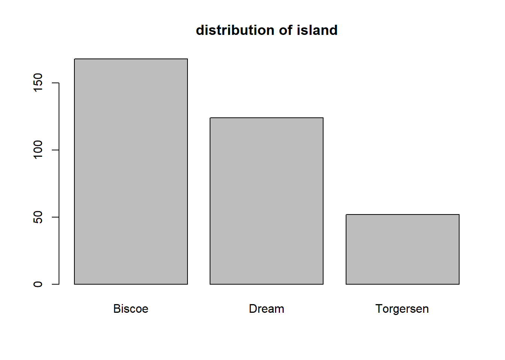
We see that there are approximately 170 penguins from Biscoe island, 125 from Dream island, and 50 from Torgersen island.
Alternatively, we can combine barplot with the table function. We do so below for the sex variable. To account for NAs in the sex variable, we specify useNA = "ifany" in the table function. Also, we specify names.arg = ... to specify the bar names, otherwise the bar for NA will be blank.
barplot(table(penguins_clean$sex, useNA = "ifany"), names.arg = c("female", "male", "NA"))We see that approximately 48% of the penguins are female, 49% are male, and 3% have an unknown sex.
To create a relative frequency bar plot, we divide the results of table by the number of relevant observations. For this particular example, we could use the code below. We use the length function to determine the number of observations to divide the counts by.
barplot(table(penguins_clean$sex, useNA = "ifany") / length(penguins_clean$sex),
names.arg = c("female", "male", "NA"))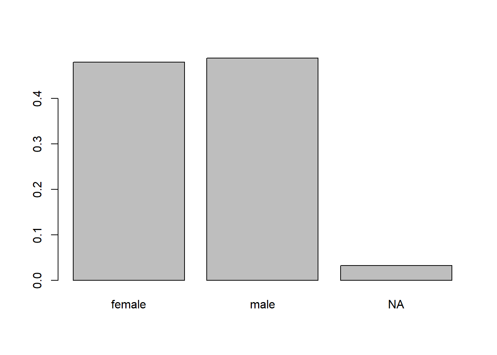
To create a bar plot with ggplot2, we first create a basic ggplot object containing our data frame. We must make sure to load the ggplot2 package prior to creating the plot, otherwise we’ll get errors!
# load ggplot2 package
library(ggplot2)
# create generic ggplot object with our data frame
gg_penguin <- ggplot(data = penguins_clean)gg_penguin is a minimal ggplot object with the raw information needed to produce future graphics. To create a bar plot, we add the geom geom_bar and map the species variable (in this example) to the x aesthetic using the aes function.
# create bar plot for species variable
gg_penguin + geom_bar(aes(x = species))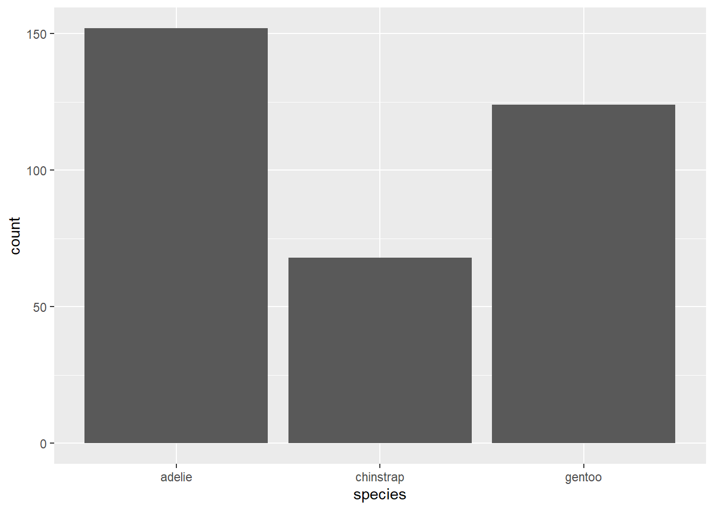
We see that there are about 150 Adelie penguins, 70 Chinstrap penguins, and 125 Gentoo penguins.
2.4.2.2 Box plots
A box plot is a simple graphic showing critical quantiles of a numeric variable, as well as outliers. A box plot indicates the median, 0.25 quantile (Q1), and 0.75 quantile (Q3) of the sample data and extends bars to the largest and smallest observations that are not outliers. Outliers are usually marked with stars or dots. The standard definition of an outlier in the context of box plots is any value that is more than Q3 + 1.5 (Q3 - Q1) and less than Q1 - 1.5 (Q3 - Q1). The box of a box plot extends from Q1 to Q3, with a line in the box indicating the median.
Box plots are useful for identifying outliers and skewness in the variable. However, box plots throw away a lot of information, so we must be cautious in making conclusions about skewness and modality without creating a histogram or density plot of the data.
The boxplot function is the easiest approach for producing a box plot using base R. We do so for the body_mass variable below, using the main argument to customize the title of the plot.
boxplot(penguins_clean$body_mass, main = "distribution of body mass")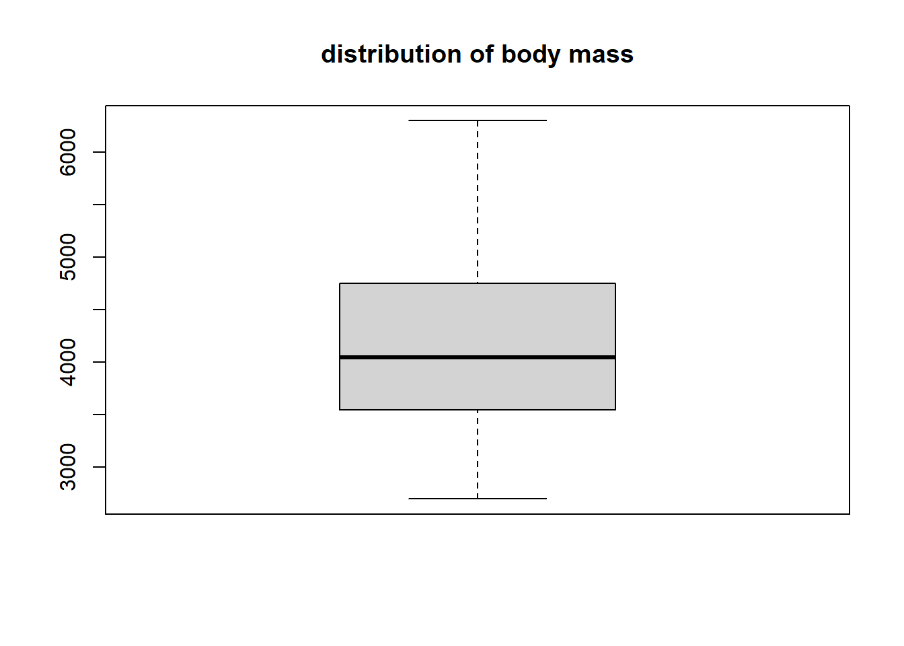
The body_mass variable doesn’t have any outliers. It has perhaps a slight positive skew since the upper tail and upper part of the box are longer than the lower tail and lower part of the box. The median body_mass value is a bit more than 4,000 grams, while 50% of the body_mass values are approximately between 3,500 and 4,750 grams (i.e., between Q1 and Q3). The lightest penguin is less than 3,000 grams, while the heaviest penguin is more than 6,000 grams.
To create a box plot using ggplot2, we use geom_boxplot. We create a box plot for the bill_length variable below. We map bill_length to the y aesthetic so that we get a vertically-oriented box plot (mapping it to x will produce a horizontal box plot).
gg_penguin + geom_boxplot(aes(y = bill_length))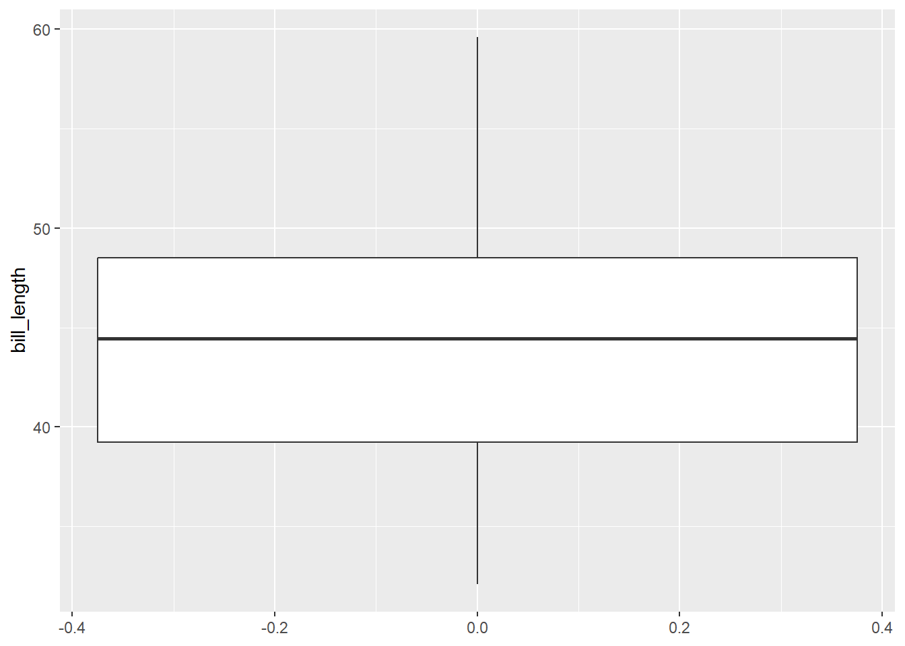
There are no bill_length outliers. The minimum bill length is approximately 32 mm and the maximum is almost 60 mm. Q1 is approximately 39 mm, the median is approximately 44 mm, and Q3 is approximately 48 mm. It is difficult to assess the skewness of this data. The upper tail is longer than the shorter tail, but the upper box is shorter than the lower box, so the evidence is inconsistent.
2.4.2.3 Histograms
A histogram displays the distribution of a numeric variable. A histogram counts the number of values falling into (usually) equal-sized “bins” running from the smallest value to the largest value. The number of bins and width of the bins affect the shape of the histogram.
Histograms are used to assess skewness, modality (the number of clear “peaks” in the plot), and to some extent, outliers.
The hist function creates a histogram of a numeric variable. We create a histogram of bill_length in the code below.
hist(penguins_clean$bill_length)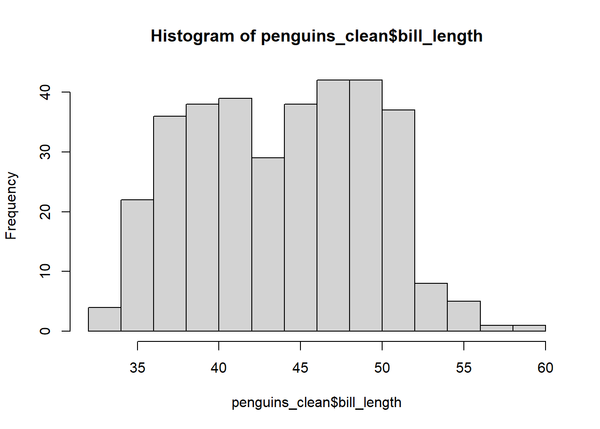
The title and x-axis label are visually unappealing, so we use the main and xlab arguments to change them to a blank title and bill length (mm), respectively. We also increase the number of bins using the breaks argument.
hist(penguins_clean$bill_length, main = "", xlab = "bill length (mm)", breaks = 20)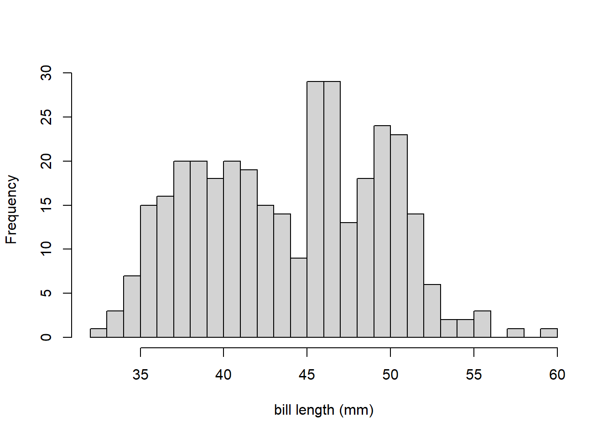
This distribution of bill_length is bimodal (has two prominent peaks or modes). That is why the box plot of bill_length provided inconsistent evidence of skewness. This also demonstrates why we should not draw conclusions about modality or skewness from numeric summaries alone.
We use geom_histogram to create a histogram using ggplot2, mapping the variable of interest to the x aesthetic. We do so for the flipper_length variable below.
gg_penguin + geom_histogram(aes(x = flipper_length))`stat_bin()` using `bins = 30`. Pick better value with `binwidth`.Warning: Removed 2 rows containing non-finite outside the scale range
(`stat_bin()`).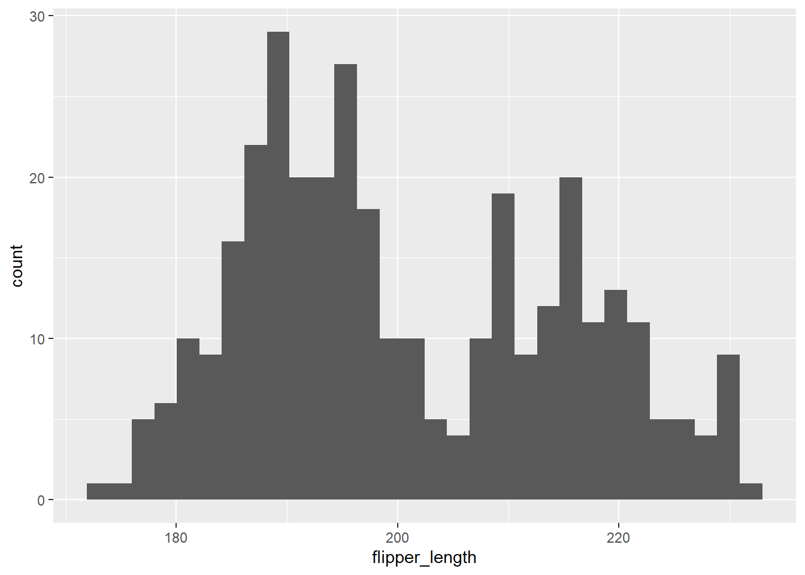
Flipper length has a bimodal distribution, with prominent peaks centered around 190 and 220 mm.
2.4.2.4 Density plots
A density plot is similar to a smoothed histogram. The area under a density curve must equal 1. In general, density plots are more visually appealing than histograms, but both communicate similar information. However, density plots can sometimes have problems near the edges of a variable with a fixed upper or lower bound because it is difficult to know how to smooth the data in that case.
We combine the plot and density functions to construct a density plot using base R. We do that for the bill_depth variable below. Note the use of na.rm to remove NA values that would otherwise poison the density calculation, and use the main argument to create a blank title.
plot(density(penguins_clean$bill_depth, na.rm = TRUE), main = "")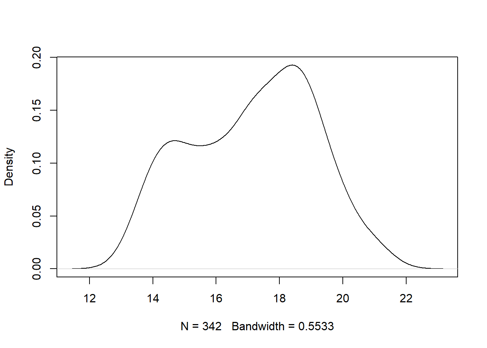
The bill_depth variable is bimodal with peaks around 14 mm and 18 mm. The graphic also indicates that 342 observations were used to estimate the density and the bandwidth parameter was 0.5533. The bandwidth parameter controls the amount of smoothing and can be changed. Run ?stats::density in the Console for more details.
We create a density plot with ggplot2 using geom_density. We do so for the body_mass variable, mapping it to the x aesthetic.
gg_penguin + geom_density(aes(x = body_mass))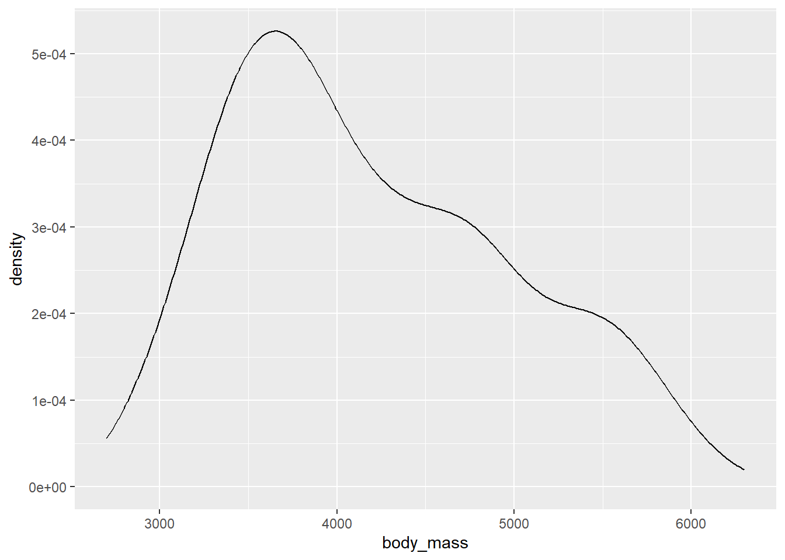
The body_mass variable is unimodal, with a peak around 3,700 grams. It is also positively skewed.
2.4.3 Bivariate plots
A bivariate plot is a plot involving two variables. A bivariate plot can involve more than one data type.
2.4.3.1 Scatter plots
Scatter plots can be used to examine the relationship between two numeric variables.
We use the plot function to create a scatter plot of bill_length versus body_mass (the y variable versus the x variable) using base R below. The plot function is very flexible and can be used in multiple ways to produce a scatter plot, but we will use the formula method that takes a formula describing the variables (y ~ x) and the data frame from which the variables come.
# xlab and ylab are used to customize the x-axis and y-axis labels
plot(bill_length ~ body_mass, data = penguins_clean,
xlab = "body mass (g)", ylab = "bill length (mm)")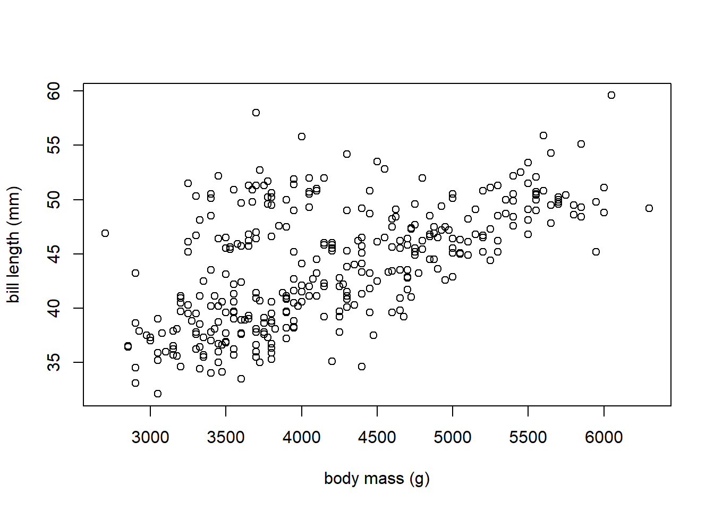
Overall, there is a positive linear relationship between body_mass and bill_length. As body_mass increases, bill_length tends to increase. However, there is a group of points in the upper left part of the scatter plot that don’t fall into the linear pattern quite as well.
The geom_point function is used to create a scatter plot with ggplot2. We map the variables to be plotted to the x and y aesthetics. We create a scatter plot of bill_length versus bill_depth using ggplot2 below.
gg_penguin + geom_point(aes(x = bill_depth, y = bill_length))Warning: Removed 2 rows containing missing values or values outside the scale range
(`geom_point()`).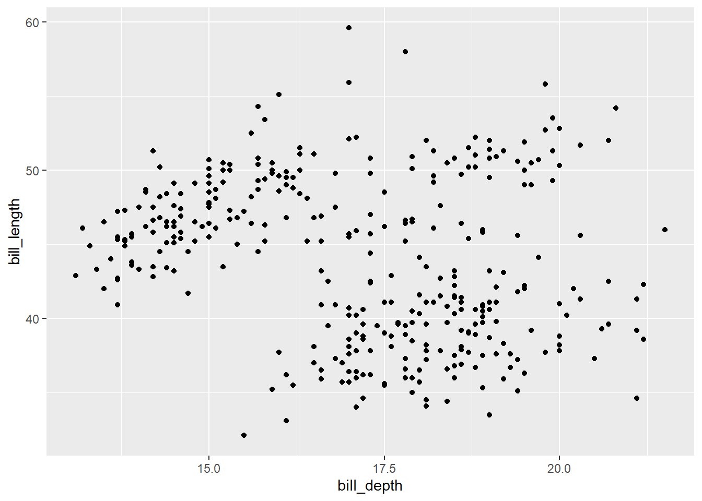
The plot of bill_length versus bill_depth doesn’t reveal a clear pattern about their association.
2.4.3.2 Parallel box plots
A parallel box plot displays the distribution of a numeric variable split by the level of a factor variable. Specifically, the values of the numeric variable are grouped based on the associated level of a factor variable, and then a box plot is drawn for each group of numeric values. Parallel box plots are useful for determining if the distribution of a numeric variable substantially changes based on whether an observation has a certain level of a factor.
We use the plot function to draw a parallel box plot by associating a numeric variable with a factor variable. Specifically, we use the formula argument of the plot function using the syntax numeric variable ~ factor variable to create a set of vertically-oriented box plots for each level of the factor variable. We can reverse the roles of the variables in the formula to get a horizontal box plots. We create parallel box plots of body_mass versus sex below.
plot(body_mass ~ sex, data = penguins_clean)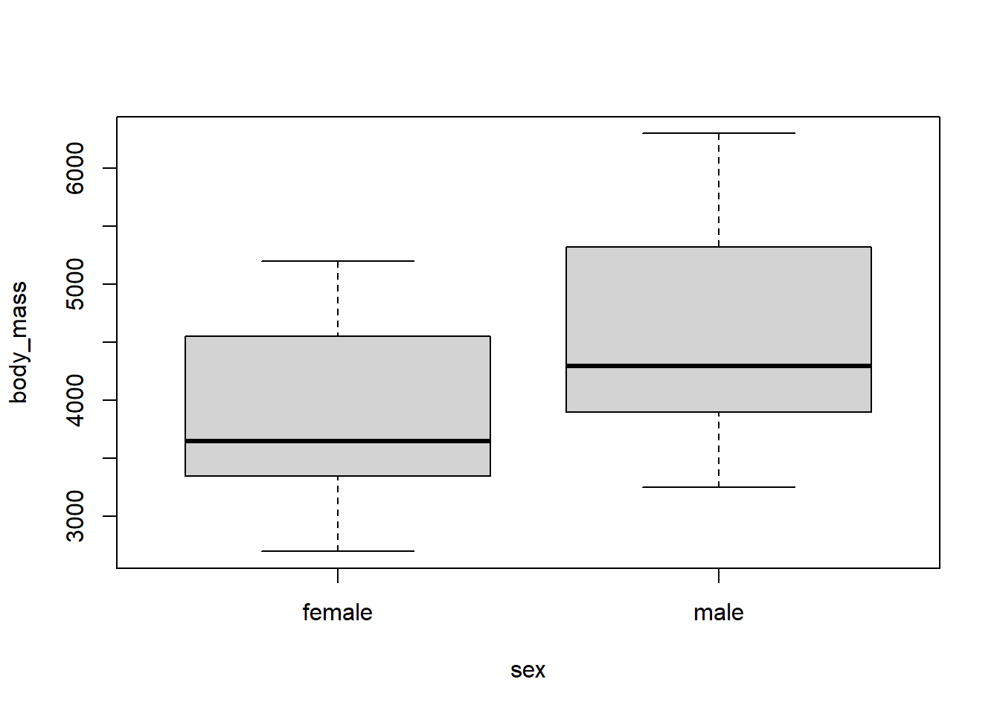
We can see that the body_mass values tend to be larger for the male penguins compared to the female penguins.
We can produce something similar with ggplot2 by mapping the numeric variable to the y aesthetic and the factor variable to the x aesthetic inside geom_boxplot. We do so below to compare bill_length for the different penguin species.
gg_penguin + geom_boxplot(aes(x = species, y = bill_length))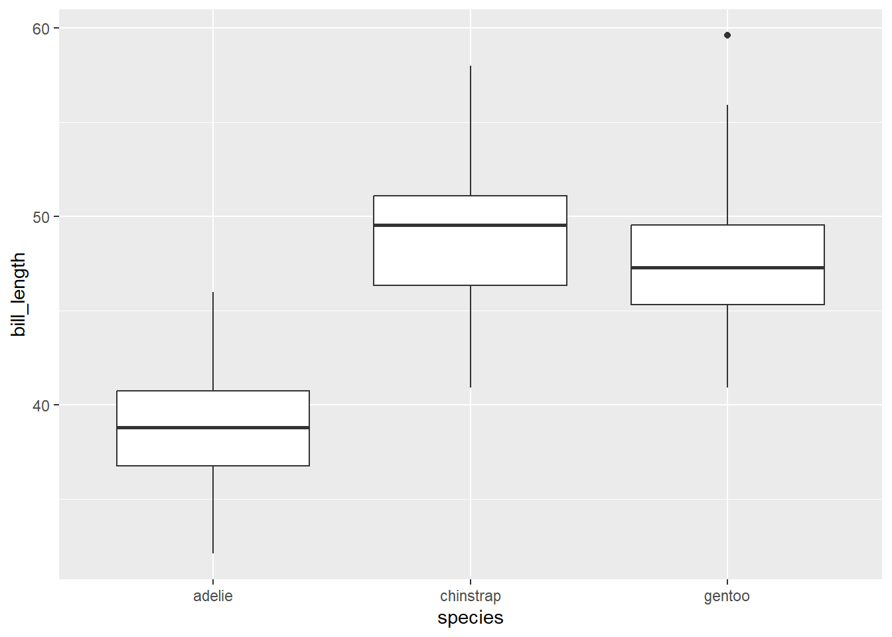
Based on the parallel box plot of bill_length, we see that the Chinstrap penguins tend to have slightly larger bill lengths than the Gentoo penguins, which typically have larger bill lengths than the Adelie penguins.
2.4.4 Multivariate plots
A multivariate plot displays relationships between two or more variables (so bivariate plots are technically multivariate plots). We focus on creating multivariate plots with ggplot2. While the same graphics can be created with base R, it is easier to create informative multivariate graphics with ggplot2.
2.4.4.1 Grouped scatter plot
A grouped scatter plot is a scatter plot that uses colors or symbols (or both) to indicate the level of a factor variable that each point corresponds to. We can actually use more than one factor variable, but interpreting the plot becomes more difficult. The most common way to create a grouped scatter plot with ggplot2 is to map a factor variable to the color or shape aesthetic of geom_point. ggplot2 will automatically map the factor variable to unique colors or shapes and then describe the mapping in a legend (this process is known as “scaling”). In the example below, we create a scatter plot of flipper_length versus body_mass that distinguishes the different species using color.
gg_penguin + geom_point(aes(x = body_mass, y = flipper_length, color = species))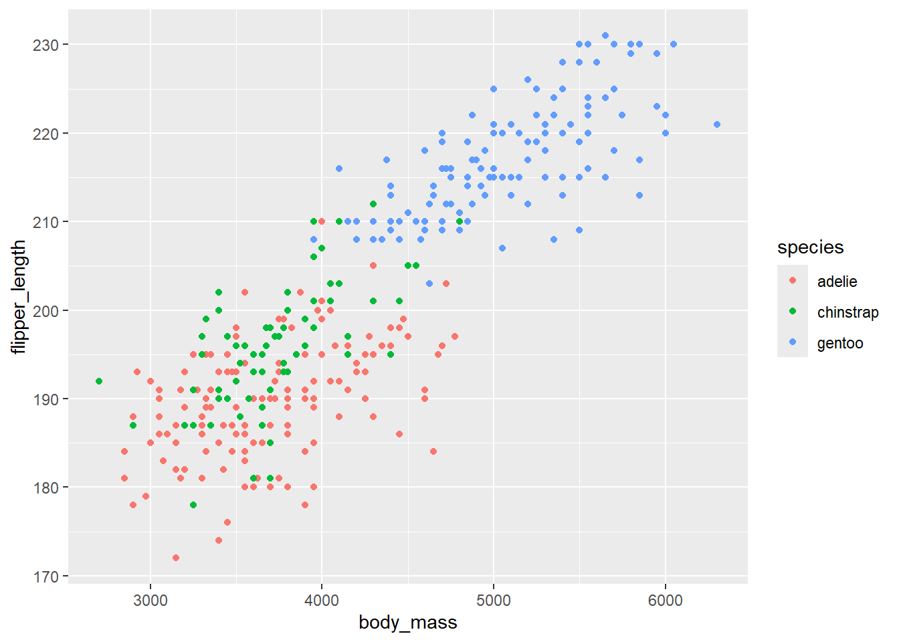
The flipper length and body mass of Gentoo penguins tend to be noticeably larger than the other two species. Chinstrap and Adelie penguins tend to have similar flipper length and body mass, with Chinstrap penguins tending to have slightly longer flipper length.
We can improve the graphic above can be made better in two ways. 1. Using better colors, and 2. Using more than one visual approach to distinguish the levels of the factor variable. The grouped scatter plot uses both red and green colors, which may be difficult to distinguish for individuals with certain forms of colorblindness. We should use a more friendly color palette. An excellent resource for choosing a color palette is https://colorbrewer2.org (Brewer (2022)). The Color Brewer website simplifies choosing a color palette based on certain desired characteristics such as whether the palette is colorblind-friendly, printer friendly, etc. The recommend palettes can be accessed using the scale_color_brewer function. We use a colorblind-friendly palette below. We also changes the x-axis label, y-axis label, and title using the xlab, ylab, and ggtitle functions respectively.
gg_penguin +
geom_point(aes(x = body_mass, y = flipper_length, color = species, shape = species)) +
scale_color_brewer(type = "qual", palette = "Dark2") +
xlab("body mass (g)") + ylab("flipper length (mm)") +
ggtitle("body mass versus flipper length by species")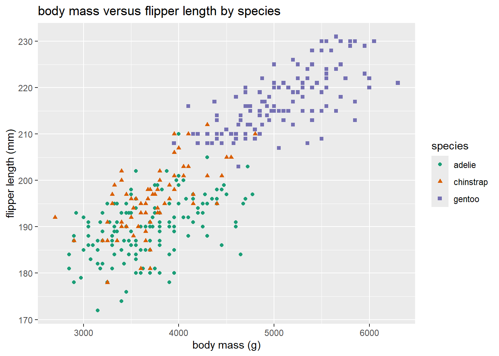
2.4.4.2 Facetted plots (and alternatives)
Facetting creates separate panels (facets) of plots based on one or more facetting variables. The key functions to do this with ggplot2 are the facet_grid and facet_wrap functions. facet_grid is used to create a grid of plots based on one or two factor variables, while facet_wrap wraps facets of panels around the plot. Below, we facet scatter plots of bill_length versus bill_depth by species.
gg_penguin + geom_point(aes(x = bill_depth, y = bill_length)) + facet_grid(~ species)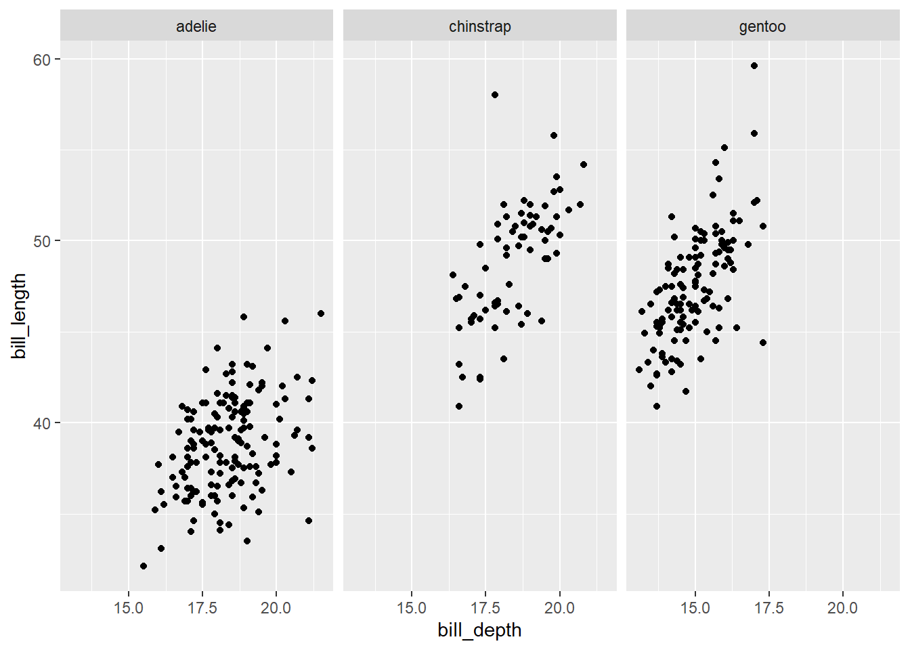
Whereas we previously couldn’t discern a clear relationship between bill length and depth based on a single scatter plot, facetting by species makes it clear there is a positive relationship between bill_length and bill_depth after accounting for species. We could have used a grouped scatter plot for the same purpose.
A simpler facetting example would be to facet density plots of body_mass by sex as shown below.
gg_penguin + geom_density(aes(x = body_mass)) + facet_grid(~sex)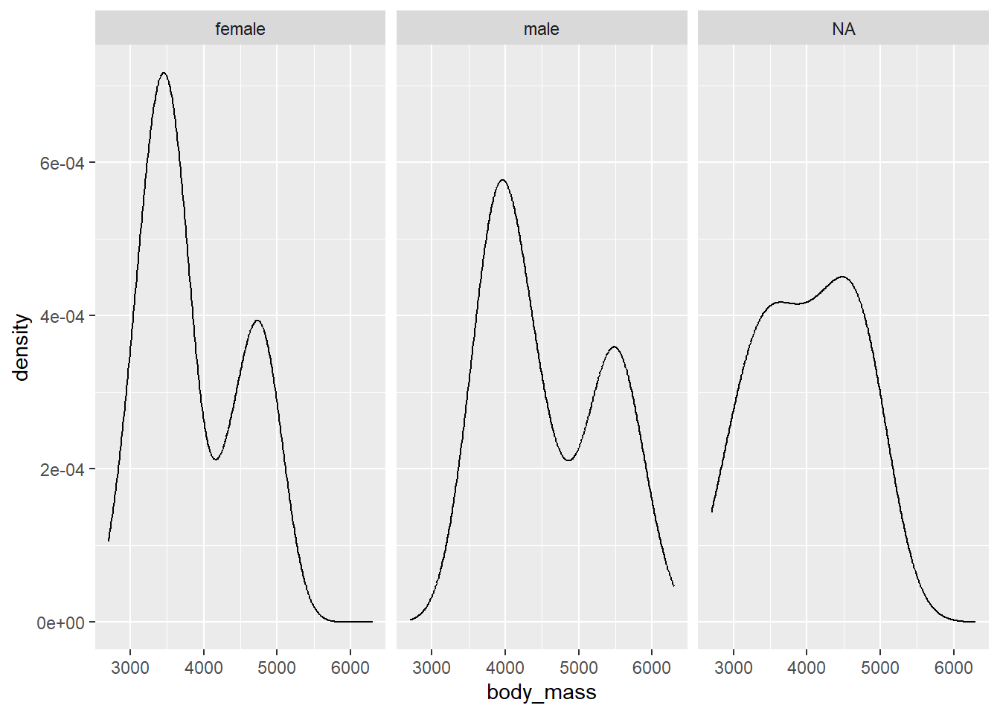
This plot is a bit difficult to interpret. We see that body mass is bimodal for the males and females. Perhaps this is related to species. Since the density plots are in different panels, its a bit tricky to see how they relate to each other. Also, the NA panel is probably not needed.
To get rid of the NA panel, we need to remove all of the observations with NA values. We do this below, using subset to select the desired columns and then using na.omit to remove any rows that have NA values for body_mass, sex, or species. Note that order matters here because na.omit removes any observation of the data frame that has an NA value. We save the filtered object as penguins_temp.
penguins_temp <-
penguins_clean |>
subset(select = c(body_mass, sex, species)) |>
na.omit()In the next graphic, we create density plots of the body_mass variable. However, we use the fill aesthetic to scale the sex variable so that the we distinguish the densities of male and female penguins with different colors. We set the alpha argument to 0.5 OUTSIDE the aes function (because it is being manually specified) so that the colors are translucent and blend. We also facet by species to see what the patterns look like for the different species.
ggplot(data = penguins_temp) +
geom_density(aes(x = body_mass, fill = sex), alpha = 0.5) +
facet_grid(~ species)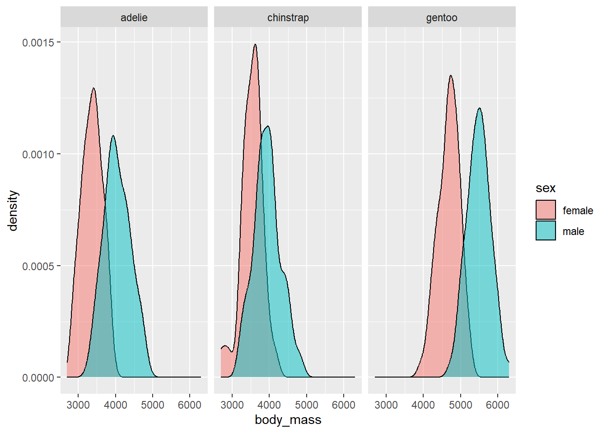
We see that for all species, the body mass of the males tends to be larger than the females.
The examples above provide a small taste of the complex graphics we can create with ggplot2 using only a few lines of code.
2.4.4.3 Interactive graphics
There are many tools for creating interactive graphics in R. We have found the ggiraph package (Gohel and Skintzos 2024) useful for creating interactive graphics based on ggplot2. However, it is a bit too complex to discuss here.
The plotly package (Sievert et al. 2024) provides the capabilities of plotly (Plotly Technologies Inc. 2015, https://plotly.com/), a well-known tool for creating interactive scientific plots, through R. The ggplotly function will instantly make a ggplot interactive (though we may need to customize it for our needs). We provide two examples below.
First, we load the plotly package to have access to the ggplotly function. We then take our previous grouped scatter plot that plotted flipper_length versus body_mass while distinguishing by species and assign it the name ggi. We then use the ggplotly function to make the graphic interactive. When we hover over a point, the plot interactively provides the exact body_mass value, flipper_length value, and species of the observation.
# load plotly package
library(plotly)
# assign grouped scatter plot name
ggi <-
gg_penguin +
geom_point(aes(x = body_mass, y = flipper_length, color = species, shape = species)) +
scale_color_brewer(type = "qual", palette = "Dark2") +
xlab("body mass (g)") + ylab("flipper length (mm)") +
ggtitle("body mass versus flipper length by species")
# make plot interactive
ggplotly(ggi)In the next example, we make interactive parallel box plots of bill_length that distinguish between species.
# assign parallel box plot name
ggi2 <- gg_penguin + geom_boxplot(aes(x = species, y = bill_length))
# make plot interactive
ggplotly(ggi2)The interactive parallel box plot provides information about the box plot characteristics of each species (such as the minimum bill_length, Q1, median, Q3, etc.)
2.5 A plan for data cleaning and exploration
We have provided many examples of data cleaning and exploration using the penguins_raw data. The analysis above is NOT exhaustive, and there are many additional numeric and visual summaries we could consider. In what follows, we summarize a basic plan below for initial data cleaning and exploration that we have found useful. We assume that we are working with a data frame, which is the most common data structure used for data analysis in R.
- Import or create the data set.
- Use the
strfunction to get an idea of the initial structure. This can help to identify clear issues we may have had in importing the data, problems with variable names and types, etc. - Clean the variable names based on our preferences.
- Convert the variables to the appropriate type (e.g., categorical variables to
factor). - Run the
summaryfunction on the data frame. Take note ofNAs, impossible values that are data entry errors, etc. We may need to perform additional cleaning based on the information learned in this step. - Compute any additional numeric summaries of the different variables, as desired.
- Create univariate plots of all variables being considered. Use histograms for discrete
numericvariables, density plots for continuousnumericvariables, and bar plots forfactorvariables. Take note of any interesting patterns such as modality, skewness, overall shape, outliers, etc. - Create bivariate plots for any pairs of variables. Use scatter plots for two
numericvariables. Use parallel box plots fornumericandfactorvariables, or perhaps create histogram plots of thenumericvariable facetted by thefactorvariable, or density plots of thenumericvariables filled with different colors by thefactorvariable. Once again, notice any patterns. - Create multivariate and interactive graphics based on what we learn in the previous steps.
2.6 Final notes on missing or erroneous data
What should we do with our data when observations are missing information or the information is clearly erroneous?
If the data are clearly erroneous, attempt to get the correct value. If the values cannot be corrected, replace them with NA since we don’t have that information.
What should we do about NAs? There are many approaches for dealing with NAs. The proper approach depends a lot on why the data are missing. Speaking informally, if there is no systematic reason causing the data to be missing, then ignoring the observations with missing data isn’t a terrible approach. However, if there is a systematic reason behind why the data are missing (such as individuals not wanting to answer a sensitive question, subjects dying for a specific reason, etc.) then ignoring that data can lead to erroneous conclusions.
In what follows, we will assume our missing data problem is not systematic and ignore missing values.